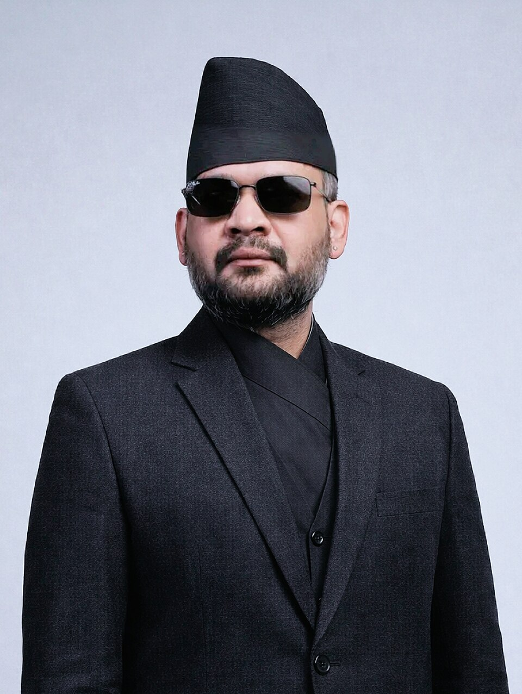
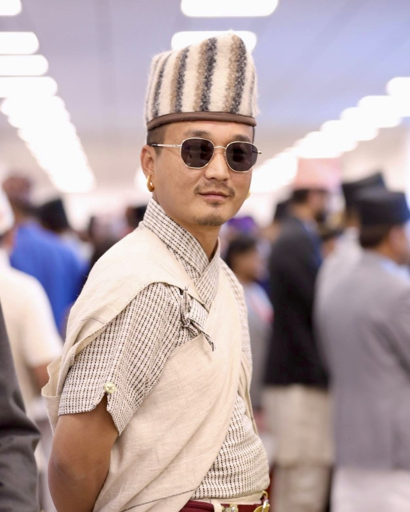
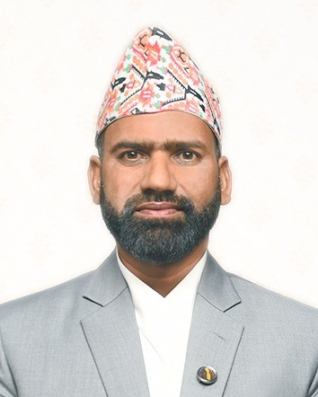
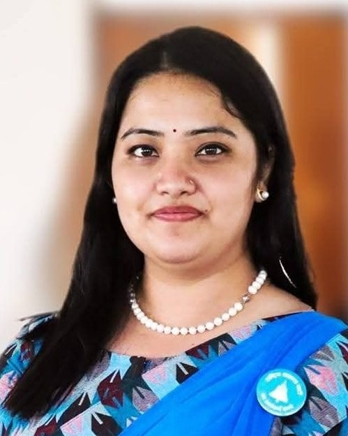

Nepal Government Cabinet (2026–Present)
Council of Ministers led by Prime Minister Balendra Shah
Overview
The Balen Shah Cabinet is the current Council of Ministers of Nepal, formed on 27 March 2026 following the general election held on 5 March 2026. The government represents a major generational shift, with a significant number of ministers under the age of 40 and a strong focus on technocratic and reform-oriented leadership.
Prime Minister
Balendra (Balen) Shah
Cabinet Size
15 Members
President
Ram Chandra Paudel
Legislature
7th Pratinidhi Sabha
Key Stats
- Youth (Under 40) 2/3
- Women Ministers 5
- Political Party RSP
"A youth-driven leadership model for modern governance."
Council of Ministers
15 Members
Balendra (Balen) Shah
Prime Minister
One of the youngest Prime Ministers in Nepali history. A structural engineer by profession, he leads the cabinet with a strong focus on technocratic governance, anti-corruption, and infrastructural reform following the 2026 youth-led movements.
Dr. Swarnim Wagle
Minister of Finance
A globally renowned economist with extensive experience in international development. He is the chief architect behind the cabinet’s economic growth, public service efficiency, and financial reform policies.

Sudan Gurung
Minister of Home Affairs
Focused on modernizing national security and law enforcement. He plays a crucial role in executing the cabinet's strict anti-corruption mandate and ensuring transparent public administration.
Shishir Khanal
Minister of Foreign Affairs
Brings deep expertise in public policy and global partnerships. His primary focus is on balanced international diplomacy, securing foreign investments for infrastructure, and elevating Nepal's global standing.
Sunil Lamsal
Minister of Physical Infrastructure & Transport
An engineering expert dedicated to overhauling Nepal's transportation networks. He is tasked with fast-tracking delayed national pride projects and improving public transit systems.
Sasmita Pokharel
Minister of Education, Science & Technology
A strong advocate for integrating modern technology into the public school curriculum. She also oversees the Youth & Sports portfolio, driving initiatives to empower the younger demographic.

Khadak Raj Poudel
Minister of Culture, Tourism & Civil Aviation
Tasked with revitalizing Nepal’s vital tourism industry post-2025. His reform priorities include upgrading civil aviation safety standards and promoting sustainable, high-value tourism.
Nisha Mahato
Minister of Health & Population (Additional Portfolio: Drinking Water)
A public health specialist focused on expanding accessible healthcare to rural areas. She also manages the Drinking Water portfolio, ensuring nationwide access to safe and clean water.
Biraj Bhakta Shrestha
Minister of Energy, Water Resources & Irrigation
A passionate environmentalist and experienced leader managing Nepal's rich water resources. His focus is on sustainable hydropower development and expanding reliable irrigation for farmers.
Dr. Bikram Timilsina
Minister of Communication & Information Technology
A tech innovator spearheading the digitalization of government services. His goal is to create a seamless e-governance ecosystem to improve public service delivery and transparency.

Pratibha Rawal
Minister of Federal Affairs & General Administration
Expert in federal governance and decentralization. She holds critical additional portfolios aimed at modernizing land management and implementing targeted poverty alleviation programs.
Dipak Kumar Sah
Minister of Labour, Employment & Social Security
Dedicated to domestic job creation to retain youth in Nepal. He is also a strong advocate for the safety, rights, and fair compensation of Nepali migrant workers abroad.
Sobita Gautam
Minister of Law, Justice & Parliamentary Affairs
A dynamic young lawyer and prominent RSP leader. She is instrumental in drafting and pushing forward the cabinet's strict anti-corruption legislation and ensuring judicial efficiency.
Geeta Chaudhary
Minister of Agriculture & Livestock Development
An agronomist focused on modernizing farming techniques to ensure food security. She also oversees the Forests & Environment portfolio, balancing agricultural growth with ecological conservation.
Sita Rijal
Minister of Women, Children & Senior Citizens
A dedicated social worker ensuring inclusive representation across government policies. She leads initiatives aimed at protecting vulnerable demographics and empowering women.
01 Key Features
-
Youth-Dominated
Around two-thirds of ministers are under 40 years old, reflecting a generational transition in Nepali politics.
-
Inclusive Representation
5 women ministers in the cabinet and representation from diverse social and regional backgrounds.
-
Technocratic Leadership
Ministers possess advanced degrees and expertise in engineering, economics, management, and public policy.
02 Formation Background
The cabinet was formed after the 2026 general election, where the RSP secured a landslide majority. The election followed youth-led anti-corruption protests in 2025, which reshaped Nepal’s political landscape.
Balen Shah became one of the youngest Prime Ministers in Nepal’s history, symbolizing a shift away from traditional parties.
Reform Priorities
- • Anti-corruption reforms
- • Efficient public service
- • Economic growth
- • Infrastructure development
Additional Portfolios
Prime Minister
Oversees Defense Ministry
Education Minister
Oversees Youth & Sports
Health Minister
Linked with Drinking Water
Federal Affairs Minister
Handles Land Management & Poverty Alleviation
Agriculture Minister
Oversees Forests & Environment
Governance Context
Nepal has experienced frequent government changes historically. The current cabinet aims to deliver stability, transparency, and accountability.
Public expectations are particularly high due to youth support, reform promises, and a strong electoral mandate.
Historic Transition
This cabinet is widely seen as a test case for modern governance in Nepal, with expectations to deliver measurable improvements in public trust.